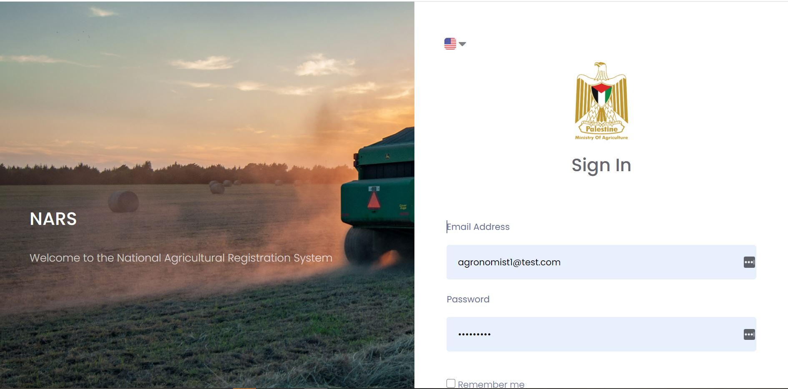

A data collection system for UNDP Palestine
The purpose of the National Agricultural Registration system(NARS) is to develop a robust agricultural data collection platform to help the Ministry of Agriculture to generate profound insights on the agricultural sector
This Platform was built in two different languages. That is Arabic and English but the default language is Arabic. Ostensibly, the platform is to connect farmers to agronomist,NGOs and other stake holders in the industry but the main purpose is for the collection of data through surveys.
Technologies used where C# ASP.NET Core API, MSSQL,Vue JS and Flutter for the mobile app aspect
I co designed and developed the NARS system in a team of 5 ,two girls and three boys. I was in charge of integrating API's and also the front-end developments.
This is the link to the NARS project paas.makedudev.com